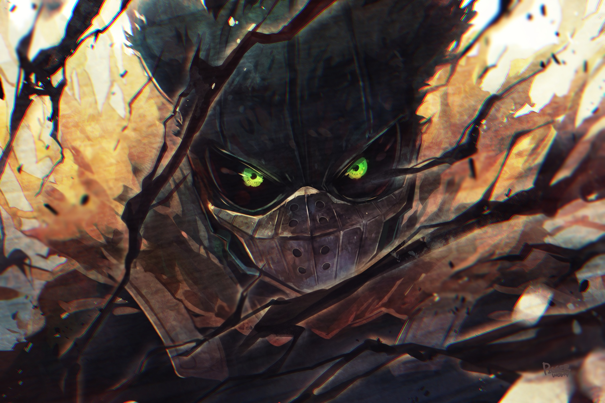

Attack on Titan: Tercera Parte de la Temporada Final

La historia de Attack on Titan se sitúa en un mundo ficticio donde la humanidad vive encerrada tras muros enormes que los protegen de los Titanes, seres humanoides gigantes que buscan devorarlos. Sin embargo, tras la aparición de un Titán colosal que destruye el muro alrededor de su aldea, Eren Jaeger jura venganza en contra de los monstruos que acabaron con ella y devoraron a su madre. Para lograr su objetivo decide enlistarse en el ejército en compañía de Mikasa y Armin, sus mejores amigos. No obstante, hay una antigua conspiración detrás del origen de los muros y los Titanes, así como oscuros secretos que podrían cambiarlo todo por completo. Aclamada por su historia, nivel de animación y elenco de voces, Attack on Titan es considerada como una de las mejores series de anime de los últimos años, por lo que ha sido galardonada múltiples veces. Cabe destacar que su cuarta y última temporada ya tuvo su debut a finales del 2020, sin embargo fue dividida en tres partes. Finalmente, la épica conclusión de esta serie llegará el próximo año, convirtiéndose en uno de los más esperados anime en 2023.
Black Clover: La Película

Seguimos los estrenos del anime en 2023 con esta cinta basada en Black Clover: una de las series de animación japonesa más exitosas de los últimos años. Su historia nos muestra las aventuras de Asta, quien es un joven huérfano y sin poderes en un mundo donde abunda la magia. Por otro lado, su mejor amigo de nombre Yuno, es todo un prodigio en el uso de habilidades mágicas. Sin embargo, esto no lo detendrá de lograr su misión de convertirse en el siguiente gran Rey de los Magos. Tras obtener un misterioso libro de hechizos, Asta se une a un grupo de caballeros mágicos para continuar su entrenamiento. Siendo comparada favorablemente con otras series como Naruto, Fairy Tail y Bleach, Black Clover tiene la distinción de haber sido una de las series más vistas en Crunchyroll durante los últimos diez años. Tras 170 episodios a lo largo de 4 temporadas, la serie animada de Black Clover llegó a su conclusión en marzo del 2021. Sin embargo, se confirmó que su historia seguiría adelante: esta vez por medio de una película animada. Y si bien se esperaba que pudiera llegar a mediados de este año, se confirmó su fecha de estreno para el 2023.
Blue lock

Al estar recién anunciado, por el momento se desconoce cuándo se estrenará la segunda temporada de Blue Lock, pero teniendo en cuenta el proceso del desarrollo y que se piensa una cobertura de al menos 10 volúmenes, podría lanzarse a mediados de 2024.
My Hero Academia
Basado en el manga de Kōhei Horikoshi, este anime producido por Bones debutó en 20112, contando actualmente con seis temporadas y 3 películas animadas. En un mundo donde la mayoría de los habitantes poseen superpoderes de algún tipo, Izuku Midoriya es un joven que sueña con convertirse en héroe a pesar de no tener ninguna habilidad especial. Será por azar del destino que conocerá a All Might, el héroe más poderoso y reconocido en el mundo, quien lo ayudará a entrenar para convertirse no sólo en un héroe más, sino eventualmente en su sucesor como símbolo de la paz. Sin embargo, también existen peligrosos villanos que desean acabar con el mundo, por lo que Midoriya deberá hacerse cada vez más fuerte si espera poder detenerlos. Considerado como uno de los títulos más populares del género en la última década, My Hero Academia concluyó recientemente la emisión de su sexta temporada. Sin embargo, al concluir rápidamente se anunció que próximamente tendríamos la llegada de su séptima entrega.
deimon slayer

Demon Slayer es un anime basado en la historia de Koyoharu Gotōge. Considerada como una de las obras más exitosas a nivel mundial, el manga original ha logrado vender más de 150 millones de copias. Debido a esto, en 2019 llegó su adaptación al anime con 212 episodios, producidos por el estudio UfoTable. A esto le siguió una película animada, la cual se posicionó como la película más taquillera del 2020 al recaudar más de 500 millones de dólares. Y siendo que su segunda temporada terminó siendo otro triunfo ante la audiencia, no es de sorprender que se haya confirmado el desarrollo de una tercera temporada de Demon Slayer. La segunda entrega de este popular anime concluyó en febrero de este año, adaptando los acontecimientos de la película así como los eventos siguientes en el manga: donde Tanjiro y sus amigos se enfrentan a un par de demonios que se ocultan en el distrito rojo. Fue precisamente tras la conclusión de este arco que se dio la noticia de que habría una tercera temporada de Demon Slayer. En ella veremos los hechos que transcurren en la saga de la aldea de los herreros de espadas, donde veremos aparecer a más lunas superiores. Y debido a la popularidad de la serie, sin duda se gana un lugar dentro de los anime en 2023 más esperados.
Jujutsu kaisen

Junji Ito es un reconocido artista de manga, aclamado por su trabajo en el género del horror. Y en exclusiva durante la Geeked Week 2022 se anunció que se está trabajando en producir una serie de anime, la cual será una antología de 20 episodios: con cada uno adaptando alguna de las terroríficas historias del autor. De esta manera, la audiencia podrá conocer sus obras más populares a lo largo de los años, las cuales serán animadas por primera vez en la historia. Se espera su estreno el 19 de enero del 2023. Pero si no puedes esperar al próximo año, también te recordamos que Cartoon Network está trabajando en una serie de anime basada en Uzumaki, otro de los trabajos más populares de Junji Ito. Esta miniserie tendrá 4 episodios y se espera que finalmente haga su debut en octubre de este año en Toonami.
one punchman

¿Qué sucede cuando un superhéroe es tan fuerte que puede derrotar a todos sus enemigos de un solo golpe? Esta es la historia de One Punch Man, una obra del artista japonés conocido como One. La serie cuenta con 24 episodios a lo largo de dos temporadas, así como varios especiales de televisión. Su trama se centra en la vida de Saitama: un hombre que constantemente vive aburrido con su vida como superhéroe ya que debido a su descomunal fuerza es capaz de derrotar a todos sus adversarios con un solo golpe. La serie ha sido aclamada no solo por su calidad de animación y sentido del humor, sino también por su variado elenco de personajes. Ahora, después de 3 años desde que se estrenó su segunda temporada, se ha confirmado la llegada de una tercera entrega: donde veremos más de Saitama así como Garou, quien busca acabar con la sociedad de héroes.
tokyo ghoul

Tokyo Ghoul es una serie de animación japonesa (anime) basada en el manga homónimo creado por Sui Ishida. La serie cuenta con dos temporadas, cada una compuesta por doce episodios, y su estreno se produjo en el año 2014. Se trata de una producción de terror con violencia explícita y ambientación sobrenatural que presenta una ciudad de Tokio en la que mueren personas inocentes a manos de ghouls, seres misteriosos que se alimentan de humanos. El protagonista es Kaneki Ken, un joven corriente que sobrevive fortuitamente al ataque de una ghoul. Sin embargo, para salir adelante le trasplantaron los órganos de la ghoul de la que fue víctima. Por ello, su vida cambia radicalmente al convertirse en un híbrido entre humano y ghoul.
tokyo revangers

Esta serie de anime del 2021 está basada en el manga de Ken Wakui. Aquí conocemos a Takemichi Hanagaki, un joven de 212 años que parece llevar una vida mediocre y sin aspiraciones. Tras enterarse que su ex novia de la preparatoria murió en un accidente, Takemichi parece también estar a punto de morir al ser empujado a las vías del tren. Sin embargo, es mágicamente transportado al pasado, reviviendo la época de su adolescencia. Decidido a cambiar el futuro y salvar a su novia Hinata, Takemichi se une a una peligrosa pandilla de delincuentes juveniles para así prevenir los hechos que ocasionan el temible accidente años después. De esta manera, Takemichi viaja a través de las dos líneas del tiempo, descubriendo hechos importantes y cambiando el rumbo de la historia. Fue a finales del año pasado que se confirmó el desarrollo de una segunda temporada, la cual se espera tenga su estreno en el transcurso del 2023.
Visland land

Seguimos los estrenos del anime en 2023 con esta serie basada en el manga de Makoto Yukimura. Su trama representa el período histórico del siglo XI, siguiendo las aventuras de un grupo de vikingos. De esta manera seguiremos la vida de Thorfinn Snorresson, quien está decidido a volverse más fuerte para así vengar la muerte de su padre. Para ello se une a la expedición de vikingos que pretende invadir la ciudad de Londres. De igual manera, seremos testigos del surgimiento de un nuevo rey que unirá a todos bajo su mando. La primera temporada de Vinland Saga debutó en 2019 con 24 episodios, siendo aclamada por su narrativa, elenco de personajes y escenas de acción. Su segunda temporada estará a cargo de Mappa y habrá de debutar en enero del próximo año, posicionándose como uno de los anime en 2023 más esperados.